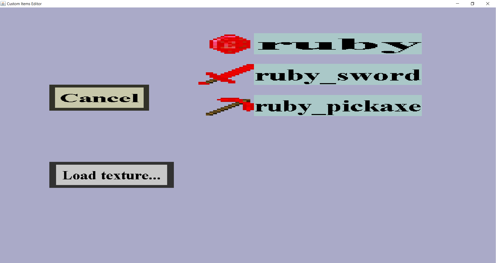

In the texture selection menu, you can select a texture/image for a custom item. If you have loaded the 3 textures from the ruby tutorial, it should look like this:
If you don't see any textures here, you will first need to load them into the editor. To do so, click on 'Load texture...', which will bring you to the texture edit menu where you can load one.
On the left are the 'Cancel' and 'Load texture' button. Additionally, every loaded texture is shown alongside with its name. Clicking on 'Cancel' will bring you back to the item edit menu you came from. The 'Load texture...' button allows you to load a texture right away. This can be convenient if you forgot to load the texture before creating the custom item. Clicking on the name of any loaded texture will select that texture and bring you back to the item edit menu you came from.